Research
I test AI the way I test a material: against a physical or clinical reference standard, with the failures reported as clearly as the successes. I apply this to diabetes, aging and oral–systemic health, and to the large language models now entering health education.
AI tested against a reference standard
My first neural network, trained on features extracted from radiographs, located the minor apical foramen correctly in 93% of test samples. Tested in human cadavers against stereomicroscopy, it was right for 96% of teeth, compared with 76% for experienced endodontists. Later work: neural networks for dentin properties and AI-assisted quantification of microcracks in diabetic dentin.
Voice and noninvasive signals in diabetes
In a matched study of 60 adults, voices recorded on ordinary smartphones differed between people with and without type 2 diabetes in five of seven acoustic features. SugarVoice builds deep-learning models on these signals to detect diabetes-related oral complications.
Evaluating large language models and AI agents
Studies comparing AI-assisted with faculty grading, and testing how the format of clinical literature changes LLM accuracy. Trainee projects on MedGemma radiology reports, AI agents, AI-image detection and the privacy risks of public generative AI.
Biomaterials and the biology behind the signal
How diabetes changes the composition, nanostructure and mechanics of dentin, and how trace elements shape dentin apatite (NSF DMR/BMAT, principal investigator). Translation through patents, NSF STTR and industry.
Selected publications
- Saghiri MA, et al. A new approach for locating the minor apical foramen using an artificial neural network. Int Endod J. 2012;45:257–65. doi
- Saghiri MA, et al. The reliability of artificial neural network in locating minor apical foramen: a cadaver study. J Endod. 2012;38:1130–4. doi
- Nguyen EH, …, Saghiri MA, et al. Versatile synthetic alternatives to Matrigel for vascular toxicity screening and stem cell expansion. Nat Biomed Eng. 2017;1:0096. doi
- Saghiri MA, Vakhnovetsky J, Nadershahi N. Scoping review of artificial intelligence and immersive digital tools in dental education. J Dent Educ. 2022;86:736–50. doi
- Saghiri MA, et al. Neural network approach to evaluate the physical properties of dentin. Odontology. 2023;111:68–77. doi
- Saghiri MA, et al. Exploring the impact of type II diabetes mellitus on voice quality. Eur Arch Otorhinolaryngol. 2024;281:2707–16. doi
- Saghiri MA, et al. Diabetes increases residual stress and microcrack length in dentin: an XRD-SEM study with AI-assisted quantification. J Endod. 2025;51:1823–9. doi
- Saghiri MA, et al. Systematic review and exploratory meta-analysis of AI-enabled and digital technology-assisted interventions for dental anxiety during dental treatment. Depress Anxiety. 2026:8850179. doi
Code
clinical-ai-proving-ground
A small toolkit and protocol for testing an AI tool against a reference standard: accuracy with Wilson intervals, sensitivity and specificity, agreement, paired comparison with a human rater, calibration, and a written report.
voice-biomarker-features
Open code for the acoustic voice features used in voice-and-diabetes research (pitch, jitter, shimmer, harmonics-to-noise ratio, cepstral peak prominence, formants), built on Praat.
Research software for teaching and research. Not for clinical use.
Teaching and mentoring
I have mentored more than 100 students and trainees, including 20 graduate thesis students, and supervise master’s research projects on AI, large language models and digital health. I teach postgraduate dental materials and have redesigned my examinations for generative AI: students must catch the error in a plausible AI recommendation, not just recall a fact. I have also taught Applications of Computers in Medicine and Dentistry, Bioinformatics, Biological Modeling, Introduction to Biomedical Engineering, and Responsible Conduct of Research.
Lab members and trainees
Current and former members of the Biomaterials Research Laboratory.
Faculty and staff
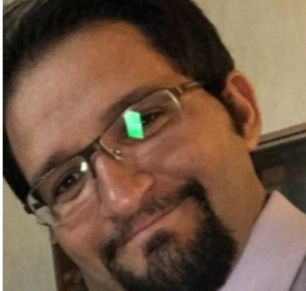
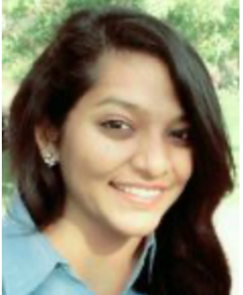
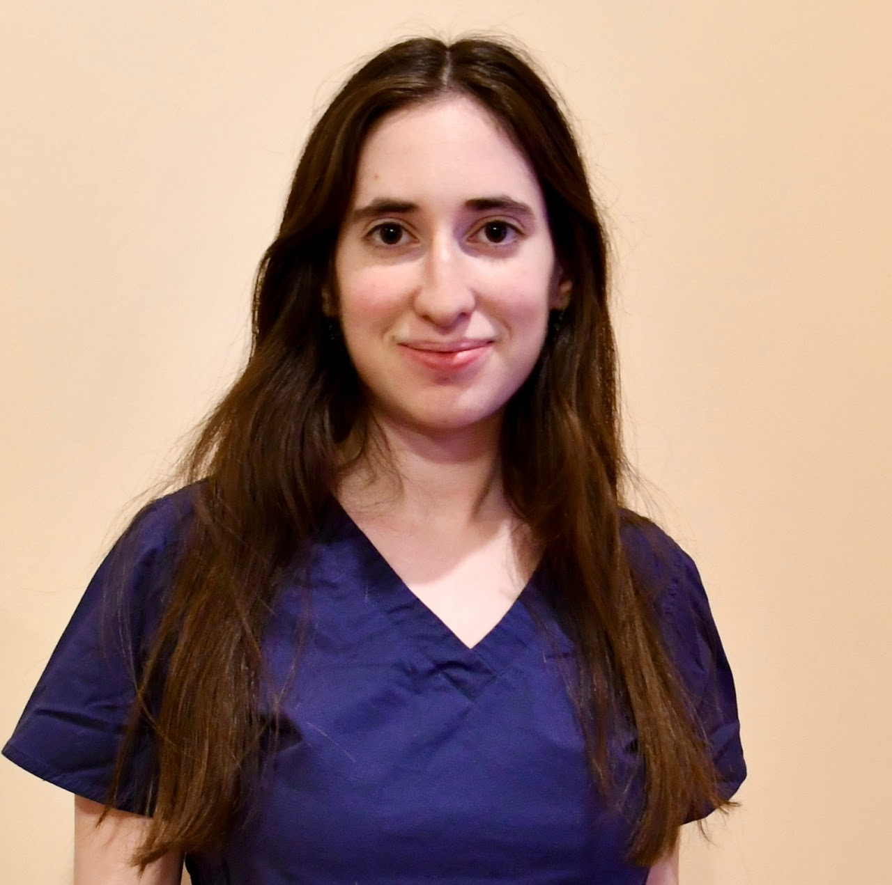
Researchers and graduate trainees
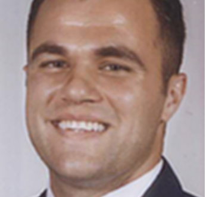
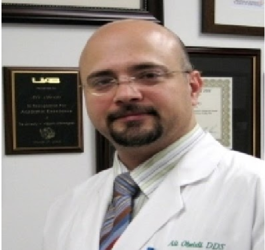
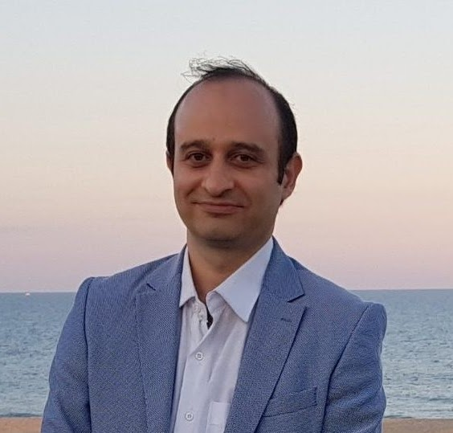
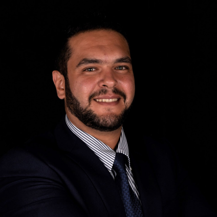
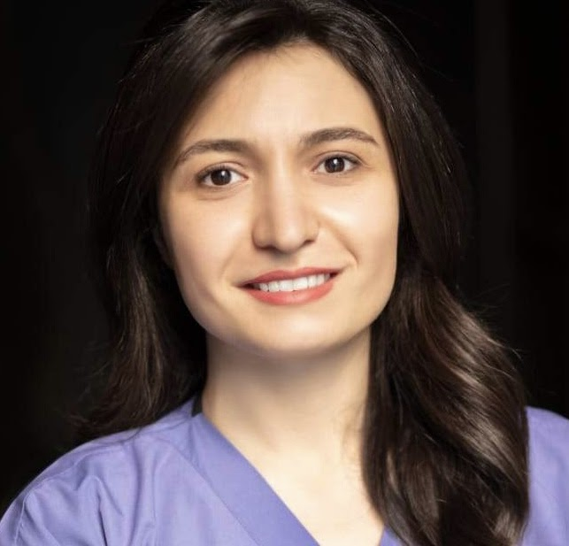
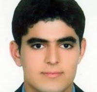
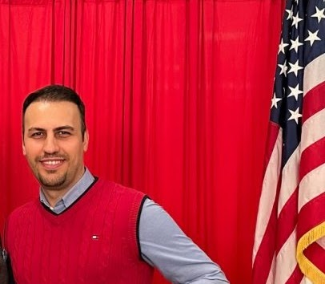
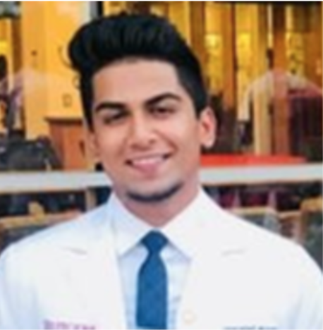
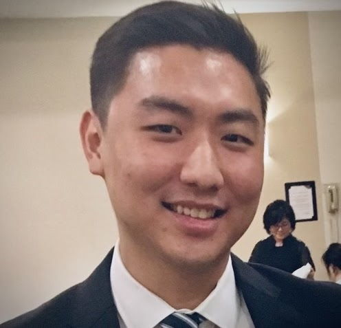
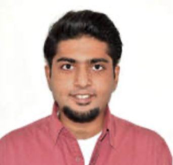
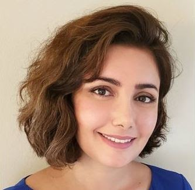
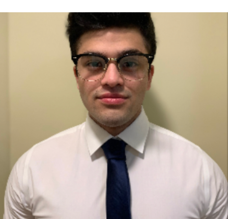
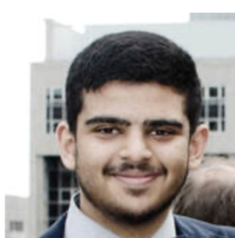
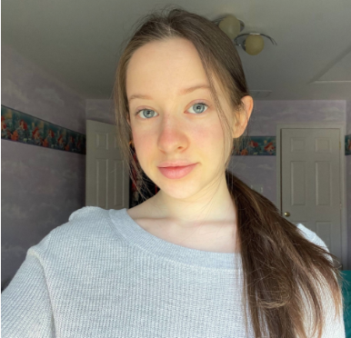
Undergraduate researchers
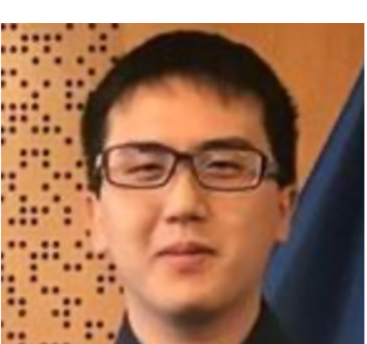
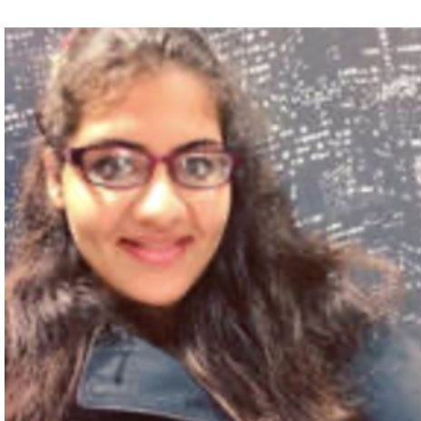
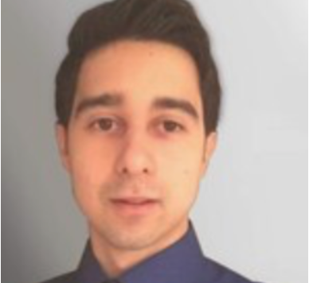
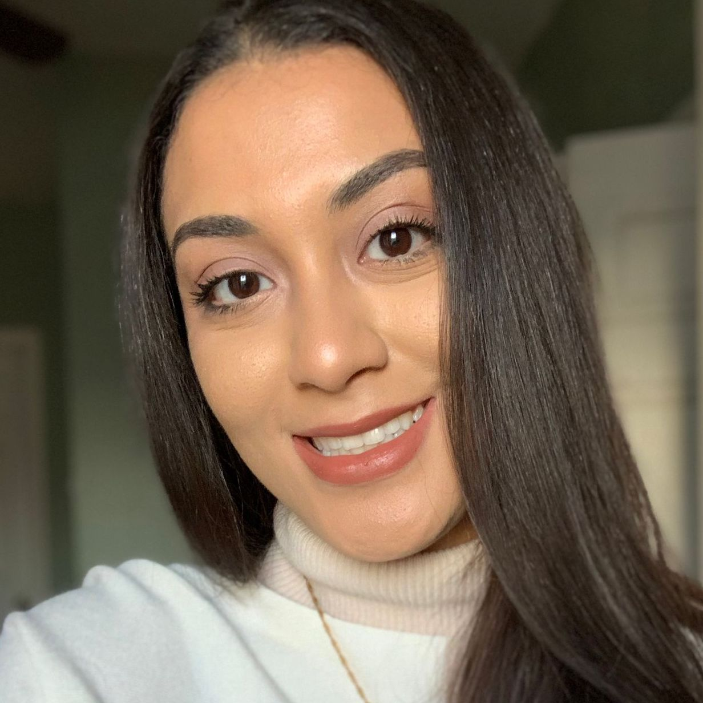
Experience
- 2024–presentAssociate Professor and Director of Research, Department of Restorative Dentistry, Rutgers School of Dental Medicine
- 2019–presentDirector, Biomaterials Research Laboratory; Leader, Scanning Electron Microscope Core (2020–), Rutgers School of Dental Medicine
- 2018–presentAdjunct faculty, Department of Endodontics, University of the Pacific
- 2018–2019Clinical and Biological Scientist, Innovation and Development, Philips Oral Healthcare
- 2013–2018Postdoctoral Scholar, then Assistant Scientist, Biomedical Materials and Engineering, University of Wisconsin–Madison
- 2007–2013Visiting Assistant Professor, University of Michigan School of Dentistry
- 2007–2013Director, Dental Materials Education Program (DDS and MS), and Director of Information Technology (2010–2013), introducing AI technology, Azad University Dental School
- 2010PhD, Biomedical Engineering
Contact
Email: saghiri@gmail.com